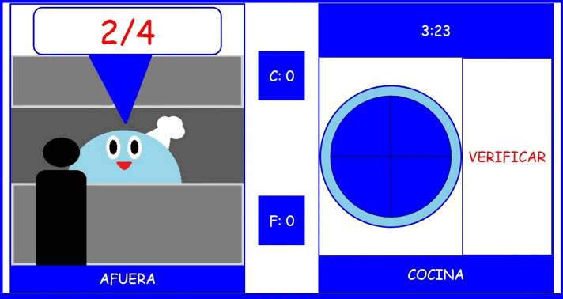

Decidi hacer varias pizzas para tener un mini comercio y ganar dinero pero claro no sera facil, porque no los voy a vender enteros sino en partes para que vaya mas gente debido si lo vendemos entero sera mas caro y habra menos gente
yo atiendo a los clientes y tu dales los pedasos, sera facil porque las pizzas estan decorados de una forma muy parecida a una fraccion y como solo vendemos en partes yo digo cuantos pedasos quiere el cliente
si necesitas saber sobre las fraciones puedes consultar en mi libro
CONSEJOS
solo imaginalo como resta

Una fracción es un número, que se obtiene de dividir un entero en partes iguales. Por ejemplo cuando decimos una cuarta parte de la torta, estamos dividiendo la torta en cuatro partes y consideramos una de ellas.
La fracción está formada por dos términos: el numerador y el denominador. El numerador es el número que está sobre la raya fraccionaria y el denominador es el que está bajo la raya fraccionaria.
El numerador es el número de partes que se considera de la unidad o total.
El denominador es el número de partes iguales en que se ha dividido la unidad o total.